58세 남자가 골프연습 후 갑자기 사진 A와 같은 5수지 굴곡 장애가 발생하였다. CT 사진이 B와 같을 때 가장 적절한 치료는?
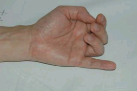
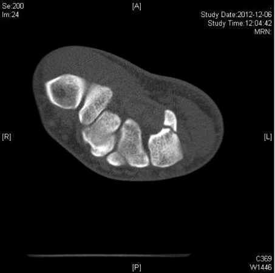
- 건이전술
- 유구골 구(hook) 절제 및 건봉합술
- 유구골 구(hook) 절제 및 건이식술
- 유구골 구(hook) 내고정 및 건봉합술
- 유구골 구(hook) 내고정 및 건이식술
능동적으로 손목과 손가락을 신전하려고 하였을 때 사진(A)와 같은 마비 현상이 관찰되었다. 그림(B)에서 신경이 전도차단(conduction block)된 지점은?
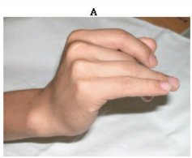
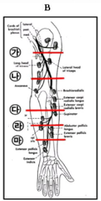
- 가
- 나
- 다
- 라
- 마
24세 남자가 3개월 전 손을 짚고 넘어지면서 우측 손목 통증이 발생하였다. 보존적 치료에 호전이 없었으며 신체검사에서 손목을 척측 변위하여 회전시킬 때 통증이 유발되었다. 방사선 소견은 정상이었다. MRI와 관절경 소견이 다음과 같을 때 가장 적절한 치료는?
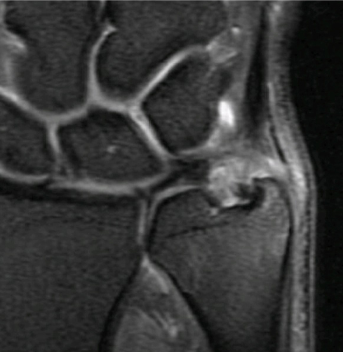
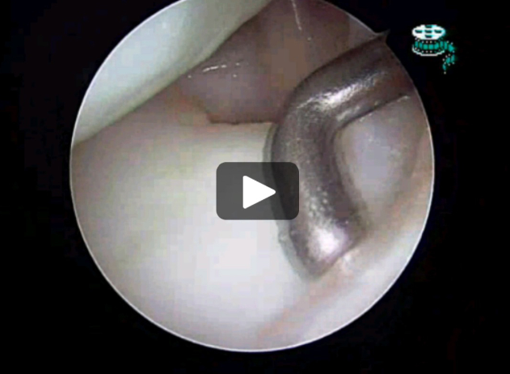
- TFCC 부분절제술
- TFCC 요측 봉합술
- TFCC fovea 봉합술
- 원위 요척 인대 재건술
- 원위 요척 관절 성형술
2년 전 넘어진 후 지속적인 손목 통증을 보이는 23세 남자의 방사선 사진(A)과 MRI 사진(B)이다. 가장 적절한 치료는?
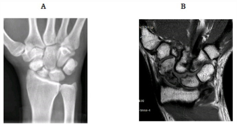
- 전방 도달 골이식
- 후방 도달 골이식
- 혈관부착 골이식
- 근위 수근열 절제술
- 근위 주상골 절제 및 4-corner 유합술
축구 중 낙상한 20세 남자가 방사선 사진(A)과 같은 소견을 보여 도수정복하였다. 도수정복 후 B와 같은 소견을 보였을 때 가장 적절한 치료는?
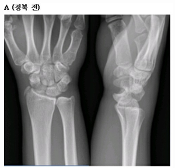
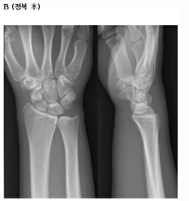
- 석고고정
- 경피적 핀고정
- 주상골 내고정
- 주상골 내고정 및 골이식
- 주상골 내고정 및 주상월상인대 봉합
좌측 4수지에 사진과 같은 변형이 있는 72세 남자이다. 이 환자의 근위지관절의 굴곡 구축에 가장 많이 기여하는 구조물은?
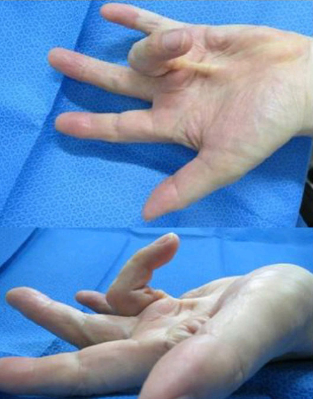
- Central cord
- Isolated digital cord
- Pretendinous cord
- Spiral cord
- Retrovascular cord
중년 여자가 심한 손저림을 호소하며 사진과 같은 소견을 보였다. 무지대립(opposition)이 불가능하였다. 가장 적절한 치료는?
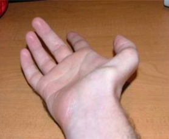
- 수근관 감압술
- 수근관 감압술 + 건이전술
- 수근관 감압술 + 활액막 절제술
- 수근관 감압술 + 신경외막유리술
- 수근관 감압술 + 횡수근인대 재건술
5년 전부터 손목 통증이 있는 56세 환자의 방사선 사진이다. 가장 적절한 치료는?
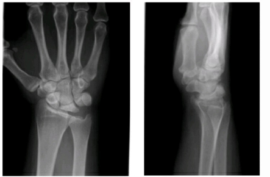
- 요골 단축술(radial shortening)
- 유두골 단축술(capitate shortening)
- 혈관부착 골이식술(vascularized bone graft)
- 주상-유두 유합술(scaphocapitate fusion)
- 손목관절 전유합술(wrist fusion)
2년 전부터 시작된 좌측 제2수지의 통증과 서서히 커지는 종물로 64세 환자가 왔다. 종물은 steroid 주사를 맞은 후 더 커졌으며, 중수지관절에서 원위지관절까지 있었고 관절운동의 제한이 있었다. 검사 상 ESR 30mm/hr, CRP 1.2mg/dl였으며 MRI(A)와 수술소견(B)이 사진과 같을 때 가장 적절한 진단은?
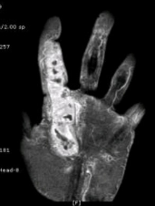
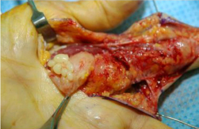
- 괴사근막염
- 화농성 감염
- 활막연골종증
- 결핵성 건활액막염
- 류마티스성 건활액막염
4수지 속질(pulp) 요측의 통증과 압통을 호소하고 볼펜 끝으로 눌렀을 때 날카로운 통증을 호소하는 40세 환자의 초음파 소견(A)이다. 수술 소견이 B와 같을 때 가장 적절한 진단은?
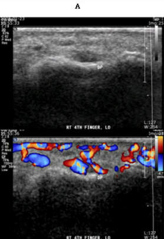
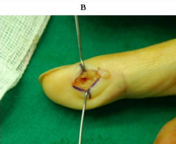
- 결절종
- 사구종
- 황색종
- 점액낭종
- 상피낭종
우측 견관절의 통증 및 관절운동제한으로 내원한 70세 여자 환자의 방사선검사(A)와 MRI 검사(B) 소견이다. 관절강내 스테로이드 주사치료 1회 및 운동치료를 시행 후 통증은 완화되었고 사진(C)과 같은 관절운동소견을 보였다 가장 적절한 치료는?
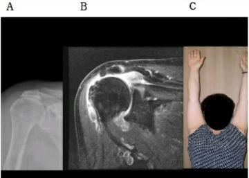
- 보존적 치료
- 견봉성형술 및 변연절제술
- 회전근 개 부분봉합술
- 광배근 이전술
- 견관절 역전치환술
아래의 사진과 같은 근위상완골 사분골절 탈구에서 상완골두 치환술을 시행하였다. 수술 후 불량한 기능적 결과를 야기하는 주된 요소로 가장 적절한 것은?
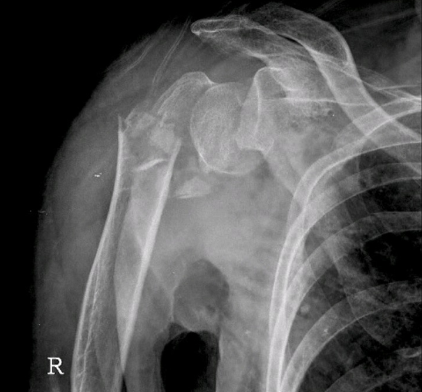
- 불안정성(instability)
- 결절부 불유합(nonunion of tuberosity)
- 신경 손상(nerve injury)
- 치환물 이완(prosthetic loosening)
- 부적절한 재활
약 20회 견관절 탈구를 경험한 24세 격투기 선수의 CT(A,B) 및 MRI(C) 사진이다. 가장 적절한 치료는?
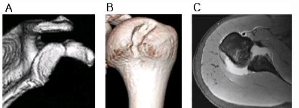
- Bankart 봉합술
- Bankart 봉합술 및 Remplissage 수술
- Bankart 봉합술 및 전방 관절낭 중첩술
- 상완골두 골이식술
- 오구돌기 이전술
다음은 우측 견관절 통증 및 운동제한을 호소하는 환자의 초음파 검사 사진이다. 변환기(transducer)(A)의 위치 및 관찰소견(B)은?
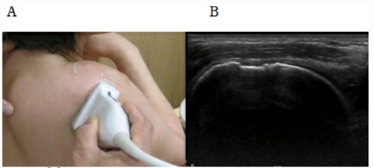
- Longitudinal section-극상건-정상
- Longitudinal section-극상건-파열
- Transverse section-극상건-파열
- Longitudinal section-극하건-파열
- Transverse section-극하건-파열
투수로 활동을 하고 있는 12세 남아가 주관절 외측 통증과 경미한 관절운동범위 제한으로 내원하였다. 환아의 방사선 사진(A)과 관절조영 컴퓨터 단층촬영 사진(B)이다. 손상 기전은?
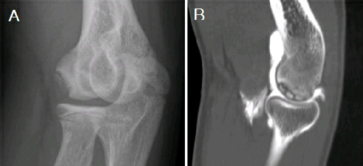
- 외측압박-신전
- 외측압박-굴곡
- 내측압박-신전
- 내측압박-굴곡
- 외측압박-내측압박
낙상 후 내원한 신경학적 증상이 없는 35세 남자의 방사선 사진이다. 가장 적절한 치료는?
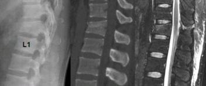
- 침상 안정
- 보조기
- 척추성형술
- 전방고정술
- 후방고정술
하지 방사통이 있는 환자의 추간판이 아래 그림의 검은색 부분으로 탈출된 것으로 나타난 경우 예상되는 적절한 임상 소견은?
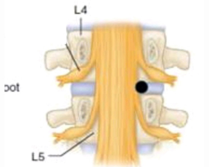
- 슬관절 전방부 및 하퇴부 내측의 감각저하
- 슬개건 반사 저하
- 아킬레스건 반사 저하
- 중둔근(gluteus medius)의 근력 저하
- 대둔근(gluteus maximus)의 근력 저하
경추 척수증으로 수술 후 4일 째 환자의 견관절 외전 근력이 약화되었다. 가장 가능성이 높은 진단은?
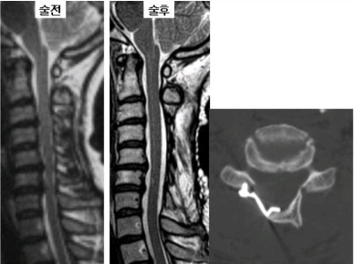
- 혈종형성
- 척수 손상
- 제4경추 신경근 마비
- 제5경추 신경근 마비
- 제6경추 신경근 마비
척추측만증이 있는 13세 여아이다. 수술적 치료를 고려해야 하는 이유는?
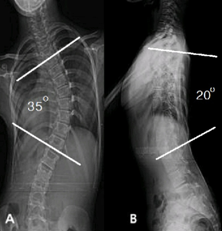
- 늑간통
- 만곡 크기
- 척수 마비
- 흉곽 확대
- 흉추 전만
다이빙 직후 제 6 경추 신경이하로 운동 신경의 완전 마비와 동통과 온도 감각이 없고, 가벼운 촉각과 진동 감각은 정상이다. 불완전 척수 손상 분류 중 가장 적절한 것은?
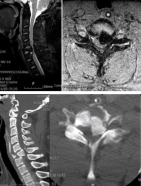
- 중심성 척수 증후군(central cord syndrome)
- Brown-Sequard 증후군(brown-Sequard syndrome)
- 전방 척수 증후군(anterior cord syndrome)
- 후방 척수 증후군(posterior cord syndrome)
- 마미 증후군(cuada equine syndrome)
최근 2주일간 둔부부터 하퇴부를 지나 발의 내측부로 전이되는 통증을 호소하였으며, 하지직거상 검사상 약 40도로 제한되었다. 적절한 진통제에도 별 호전이 없어서 가능성이 높은 신경근에 선택적 신경차단술을 시행하고자 한다. 가장 적절한 위치는?
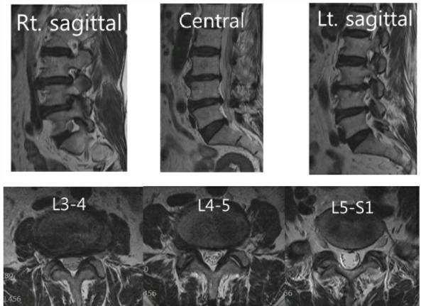
- 우측 요추 3-4 추간공
- 우측 요추 4-5 추간공
- 우측 요추 5 - 천추 1 추간공
- 좌측 요추 4-5 추간공
- 좌측 요추5 - 천추 1 추간공
경부통과 좌상지 방사통이 있는 환자이다. 상완 삼두근 반사의 저하, 좌측 제3수지의 감각저하, 그리고 주관절의 신전력이 감소되어 있었다. 이 환자에서 예상되는 경추 추간판 탈출 영상은?
-
영상 보기 1
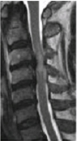
선지 1 이미지 1 · image25.png -
영상 보기 2
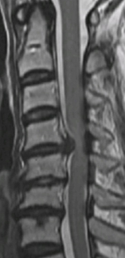
선지 2 이미지 1 · image27.png -
영상 보기 3
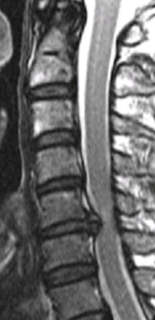
선지 3 이미지 1 · image29.png -
영상 보기 4
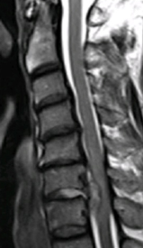
선지 4 이미지 1 · image24.png -
영상 보기 5
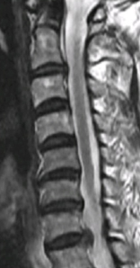
선지 5 이미지 1 · image30.png
6개월 이상 경부통과 우 상지 방사통이 있는 45세 남자 환자이다. 우측 전완부 요측과 제 1,2 수지에 감각저하와, 주관절 굴곡, 손목 신전 근력이 지속적으로 감소하고 있다. 가장 적절한 치료는?
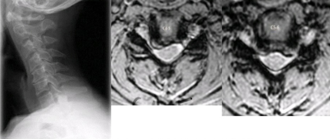
- 신경 차단술
- 교감 신경 차단술
- 전방 추간판 제거 및 유합술
- 후궁 절제술(laminectomy) 및 유합술
- 후궁 성형술(laminoplasty)
경부 좌측 전방접근(anterior approach)시 내측과 외측으로 견인(retraction)되는 구조물의 조합으로 가장 옳은 것은?
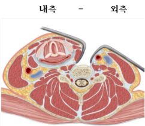
- 회귀성 후두 신경 – 미주 신경
- 흉쇄돌기근 – 미주 신경
- 교감 신경절 – 흉쇄돌기근
- 미주 신경 – 회귀성 후두 신경
- 미주 신경 – 흉쇄돌기근
소아기때의 척추질환으로 인해 심한 후만 변형이 있는 20세 여자 환자이다. 지연성 하반신 마비가 나타나는 경우, 동영상과 같은 진찰 소견은?
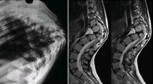
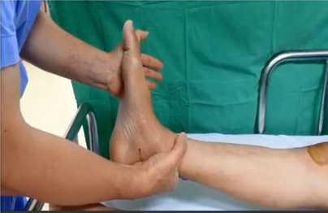
- 족부 간대성 경련
- 심부 슬개건 반사
- 아킬레스건 반사
- Babinski 반사
- Oppenheim반사
Pincer형 대퇴비구 충돌을 유발할 가능성이 가장 높은 방사선 사진은?
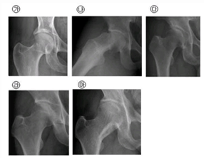
- 가
- 나
- 다
- 라
- 마
우측 고관절 통증이 있는 84세 여자가 서서 촬영한 골반 전후면과 요천추 측면 방사선 사진이다. 척추에 대한 수술적 치료는 고려하고 있지 않다면 고관절 전치환술 시 비구컵의 적절한 삽입 위치는?
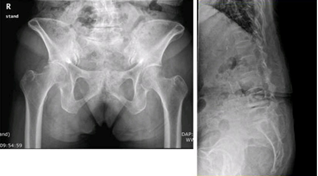
- 큰 외전각
- 작은 외전각
- 큰 전염각
- 작은 전염각
- 피질골 천공 후 내측 전위
좌측 고관절 전치환술 후 재발성 탈구를 보이는 환자의 대퇴스템 소견이다. 가장 적절한 치료는?
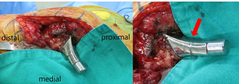
- 연부조직 재건술
- 대전자 원위 이전술
- 융기된 라이너로 교체
- 구속형 라이너로 교체
- 비구컵 재치환술
우측 고관절의 자기공명 관절 조영술(magnetic resonance arthrography)영상이다. 화살표 부위 소견은?
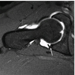
- 비구순 파열
- 활액막
- 유리체
- 골연골 결손
- 비구순 하 절흔
3년 전부터 좌측 고관절 통증이 생긴 41세 환자의 방사선 사진과 MRI 검사다. 과거력 상 특별한 사항은 없었다. 가장 가능성이 높은 진단은?
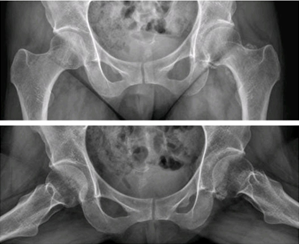
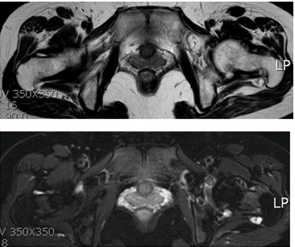
- 활막 연골종증
- 고관절 이형성증
- 류마티스 관절염
- 대퇴골두 골 괴사
- 색소융모 결절성 활액막염
사진과 같은 근위대퇴골 형태를 가진 환자에서 인공 고관절 전치환술을 시행할 때, 불안정성, 마모 및 하지길이의 차이를 최소하하기 위해 가장 적절한 수술방법은?
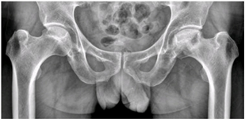
- 대퇴 경부의 하부 절제(low cutting) 후 짧은 골두
- 대퇴 경부의 하부 절제 후 긴 골두
- 대퇴 경부의 상부 절제 (high cutting) 후 짧은 골두
- 대퇴 경부의 상부 절제 후 긴 골두
- 대퇴 경부의 상부 절제 후 큰 골두
전자간 골절 중 압박고나사 금속판 보다 골수강내 금속정으로 고정하는 것이 더 적절한 골절 양상은?
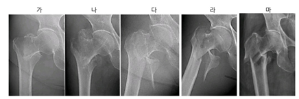
- 가
- 나
- 다
- 라
- 마
대퇴경부 골절을 나사못으로 고정한 사진이다. 나사못 삽입 순서는?
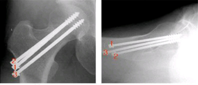
- 1-2-3
- 2-1-3
- 2-3-1
- 3-1-2
- 3-2-1
비구의 후방 도달법인 Kocher-Langenbeck 수술 도달법의 모식도(A,B)이다. 대좌골절흔(greater sciatic notch)으로 접근할 때 가이드가 되는 표지자(*)는?
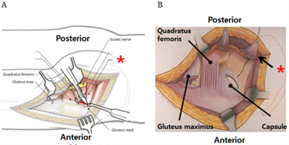
- 이상근(piriformis)
- 상 쌍자근(gemellus superior)
- 하 쌍자근(gemellus inferior)
- 내 폐쇄근(obturator internus)
- 외 폐쇄근(obturator externus)
25세 남자 환자가 3일전 우측 무릎을 땅에 심하게 부딪힌 후 내원하였다. 후방 전위검사에서 약 5mm정도의 후방 불안정성이 관찰되었고, 대퇴사두근 활성검사(quadriceps active test)는 음성이었다. MRI와 관절경 사진이다. 가장 적절한 치료는?
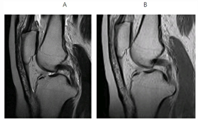
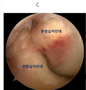
- 약물 치료와 함께 즉각 일상 생활로 복귀
- 3주 간 보조기 착용 및 제한된 범위에서 조기 관절 운동
- 2개월 간 석고 고정
- 관절경적 열수축술(thermal shrinkage)
- 관절경적 후방 십자인대 재건술
57세 환자가 좌측 슬관절의 내측 통증과 내반 변형으로 그림과 같은 수술을 받았다. 이 술식에서 흔히 발생 할 수 있는 단점은?
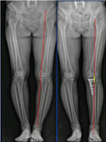
- 경골 후방 경사 증가
- 비골 신경 손상
- 슬개골 고위증 발생
- 전방 불안정성 감소
- 하지길이 단축
좌측 슬관절 슬개대퇴통증증후군(patellofemoral pain symdrome)환자에 대하여 그림과 같은 관절경 수술을 시행하였다. 수술 중 가장 흔히 손상받을 수 있는 혈관은?
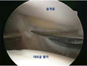
- Inferolateral geniculate artery
- Ingeromedial geniculate artery
- Middle geniculate artery
- Superolateral geniculate artery
- Superomedial geniculate artery
슬관절 재치환술 중 시험 치환물(trial prosthesis) 삽입 후에 굴곡 간격은 적절하였으나 신전시 그림과 같은 소견이 보였다. 가장 적절한 해결 방법은?
- 경골 근위부 보강
- 경골 근위부 후방 경사 증가
- 경골 근위부 추가 골 절제 후 더 두꺼운 폴리에틸렌 삽입물 사용
- 대퇴골 원위부 보강
- 더 큰 대퇴 치환물 선택 및 현재 두께의 폴리에틸렌 삽입물 사용
25세 남자가 1주일 전 농구 시합 중 우측 무릎이 꺾여 내원하였다. MRI 소견을 보고 가장 먼저 의심해야할 관절내 손상 구조물은?
- 내측슬개대퇴인대
- 내측측부인대
- 외측측부인대
- 전방십자인대
- 후방십자인대
1년전 우측 슬관절에 가동형 단일과치환술(mobile bearing unicondylar knee arthroplasty)을 시행 받은 환자가 일주일 전 방바닥에 앉았다 일어서면서 파열음과 함께 운동 장애가 발생하여 내원하였다. 시행한 방사선 검사(A,B)이다. 가장 적절한 진단은?
- 감염
- 골용해
- 치환물 해리
- 삽입물주위 골절
- 폴리에틸렌 삽입물 탈구
20세 남자 환자가 3일전 축구 중 발생한 우측 슬관절 통증으로 내원하였다. 외측 반월연골판 수직파열(빨간색 줄)이 그림과 같이 확인될 때 가장 적절한 수술법은?
- Arthroscopic all-inside suture
- Arthroscopic inside-out suture
- Arthroscopic outside-in suture
- Open suture
- Arthroscopic partial meniscectomy
6년 전 슬관절 전치환술을 시행받은 환자가 1년 전부터 슬관절 통증과 부종이 발생하였다. 보행시 심한 슬관절 통증과 불안정성이 있고, 보행 초기에 증상이 더 심하다. 혈액 검사에서 ESR, CRP는 정상 범위이고, 관절천자 검사에서 백혈구 1400/mm3, 관절액 배양검사는 음성이다. 수술 후(A,B), 최종추시(C,D) 방사선 검사를 고려할 때, 가장 적절한 치료는?
- 관절경적 변연절제술
- 관혈적 변연절제술 및 인공관절 유지
- 인공관절 제거와 동시에 재치환술
- 인공관절 제거 후 추후 재치환술
- 인공관절 제거 및 동시에 관절유합술
54세 당뇨환자가 5일전 갑자기 발생한 하퇴부의 통증 및 부종으로 내원하였다. 발목의 외과부위에서 삼출물이 관찰되었고 체온은 38.9도였다. 하퇴부의 전반적인 부종 및 ecchymosis가 보였고 촉진을 하였을 때 crepitus가 있었다. 환자의 하지와 방사선 검사에서 아래와 같은 소견을 보였을때 가장 적절한 치료는?
- 정맥 항생제 투여
- 고압 산소치료 + 정맥 항생제 투여
- 변연 절제술 + 상처봉합 + 정맥 항생제 투여
- 변연 절제술 + 상처개방 + 정맥 항생제 투여
- 변연 절제술 + 배액관 삽입 후 상처 봉합 + 정맥 항생제 투여
21세 환자가 특별한 외상없이 뒤꿈치의 통증으로 시행한 방사선 검사 및 MRI사진이다. 이와 같은 합병증을 유발할 수 있는 약제는?
- Bisphosphonate
- Fluoroquinolone
- Ibuprofen
- Methotrexate
- Simvastatin
76세 환자가 보행 중 넘어져 시행한 방사선 사진이다. 가장 적절한 치료방법은?
- 최소침습 금속판 고정술
- 관혈적 정복 및 금속판 고정술
- 전향적 금속정 고정술
- 역행적 금속정 고정술
- 이중 금속판 고정술
극심한 족부 통증이 있는 45세 남자 환자의 사진으로 colchicine을 투여하였으나 증상의 호전이 없을 경우 가장 적절한 약물치료는?
- Allopurinol
- Corticosteroid
- COX-2 inhibitor
- Indomethacin
- Probenecid
79세 여자환자에서 발생한 대퇴 전자간 골절에 대해 금속정 내고정술 후 1일째 흉통과 의식저하가 발생하여 시행한 흉부 CT소견이다. 가장 적절한 치료 방법은?
- 수분공급
- Lasix투여
- Hepain 투여
- 광범위 항생제 투여
- 응급 기도 절개(tracheostomy)
10개월전 아킬레스건 파열된 환자에 대한 수술 중 변연 절제술 후 소견이다. 아킬레스건 재건술을 시행하려 할 때 가장 적절한 수술방법은?
- V-Y 연장술(V-Y advancement)
- 대퇴사두 건막 자가이식술(quadriceps fascia autograft)
- 비복건막 회전 피판술(gastrocnemius fascia flap turn down)
- 아킬레스 동종건 이식술(Achilles tendon allograft)
- 장무지 굴곡건 이전술(flexor halluces longus transfer)
족관절 관절경 검사상 다음의 소견을 관찰할 수 있는 관절경의 삽입구(portal)을 만들 때 손상받기 쉬운 신경은?
- 복재 신경(saphenous nerve)
- 비복 신경(sural nerve)
- 심부 비골 신경(deep peroneal nerve)
- 천부 비골 신경(superficial peroneal nerve)
- 후 경골 신경(posterior tibial nerve)
제1중족족지 관절의 배부에 통증이 있는 환자의 방사선 사진(A,B)이다. 가장 증상이 많이 발생하는 보행주기에서의 시기는?
- 가
- 나
- 다
- 라
- 마
교통사고 후 족부 손상 환자의 임상(A) 및 방사선 검사(B,C)이다. 정복을 방해하는 가장 흔한 구조물은?
- 비골건
- 전경골건
- 족무지 굴건
- 족무지 신건
- 후경골건
사진과 같은 변형을 보여주는 50세 남자 환자의 후족부 교정을 위한 수술적 치료에 있어 가장 주의하여야 할 구조물은?
- 비복 신경
- 심부 비골신경 및 족배 동맥
- 족근동 동맥
- 천부 비골 신경
- 후경골신경 및 혈관
금속정 고정후 발생한 지연유합에 대하여 역동화술을 시행하였고, 그 이후 1년이 지났으나 대퇴부에 통증이 지속되고 있다. 감염은 없으며, 사진과 같은 소견일 때 가장 적절한 치료는?
- 자가골 이식술
- 근위 교합나사의 제거술
- 원위 교합나사의 제거술
- 근위 및 원위 교합나사의 제거술
- 직경이 큰 교합성 골수정 재고정술
그림의 골절에 적용된 금속판의 기능은?
- 가교(bridging)
- 지지(buttress)
- 압박(compression)
- 중립(neutralization)
- 긴장대(tension band)
사진과 같은 외상 환자에서, 혈압은 80/40 mmHg, 맥박은 130회/분이었으며, 복부 초음파 검사에서 장기손상은 없었다. 초기의 치료로 가장 적절한 것은?
- 골 견인술(skeletal traction)
- 골반 바인더(pelvic binder)
- 후복강 거즈 충전(retroperitoneal gauze packing)
- 외고정 장치술(external fixation)
- 치골 결합부 금속판 고정술(symphyseal plating)
골반골의 전후면 방사선 사진의 모식도이다. 후방 골주의 골절이 있을 때, 연속성이 소실될 가능성이 가장 높은 것은?
- 가
- 나
- 다
- 라
- 마
골수정 삽입시에 사진과 같은 변형을 방지하기 위한 수술 기법은?
- 골수정 삽입점을 낮게 시작
- 골수정 삽입점을 슬개건의 내측에서 시작
- 근위 골편 골수강 외측부에 poller 나사못 고정
- 근위 골편의 골수강 전방부에 poller 나사못 고정
- 원위 골편의 골수강 외측부에 poller 나사못 고정
6세 때에 우측 대퇴골 간부 골절에 대해서 도수 정복 및 고수상 석고붕대 고정으로 치료를 받았던 16세 환자의 방사선(A) 및 CT(B)이다. 이 환자에서 보일 수 있는 보행 이상과 적절한 치료의 조합은?
- 내족지 보행(in-toeing gait) – 대퇴골 내반 절골술(varization osteotomy)
- 내족지 보행(in-toeing gait) – 대퇴골 외반 절골술(valgization osteotomy)
- 외족지 보행(out-toeing gait) – 대퇴골 외회전 절골술(external rotation osteotomy)
- 외족지 보행(out-toeing gait) – 대퇴골 내회전 절골술(internal rotation osteotomy)
- 외족지 보행(out-toeing gait) – 비구주변 절골술(periacetabular osteotomy)
우측 주관절 부의 통증이 있는 12세 우완 투수의 우측 (A) 및 좌측 (B) 주관절 방사선 사진이다. 매일 100회의 투구를 한다고 한다. 신체 검사상 우측 주관절 내측부(화살표)의 압통 및 부종이 있었다. ESR 8mm/hr, CPR 0.5mg/dL였다. 가장 적절한 치료는?
- 일시적 투구 중단 및 안정
- 항생제 투여
- 스테로이드 국소 주사
- 도수 정복 및 경피적 핀 고정술
- 관혈적 정복 및 핀 고정술
우측 발달성 고관절 이형성증에 대해서 생후 12개월에 수술적 정복 후 추시 중인 12세 환아의 방사선 검사이다. 고관절의 통증이나 운동 제한은 없었다. 화살표 부의는 어떤 소견인가?
- 비구변연 골절 불유합(nonunion of acetabular rim fracture)
- 비구측 무혈성 괴사(osteonecrosis of acetabular margin)
- 관절막 이소성 골화(heterotopic ossification at the capsule)
- 장골 이차 골화중심(secondary ossification center of the ilium)
- 조기 퇴행성 관절염(precocious osteoarthritis)
방사선 검사와 같은 골절 시 골절선은 다음 골단판의 여러 층 중 어느층으로 주로 통과하는가?
- A
- B
- C
- D
- E
내족지 보행(in toeing gait)을 하는 4세 여아의 신체 검사 사진이다. 보행 이상을 보이는 주된 원인으로 생각되는 소견은?
- 전족부 내전(forefoot adduction)
- 경골 내염전(intorsion)
- 경골 외염전(extorsion)
- 근위 대퇴골 전염전(anteversion)
- 근위 대퇴골 후염전(retroversion)
사진(A)와 같은 부상을 입은 7세 남아에 대한 수술 전 신체 검사 상 손의 감각이상은 없었으며, (B)와 같은 자세를 취하라고 하였을 때 (C)와 같은 자세를 취하였다. 손상 받은 신경은?
- 요골신경
- 척골신경
- 전방골간신경
- 후방골간신경
- 근피신경
키가 작은 8세 남아의 체형이 그림과 같다. 가장 가능성이 높은 진단은?
- 골형성부전증(osteogenesis imperfecta)
- 선천성 척추골단이형성증(SEDC)
- 모르키오 병(Morquio disease)
- 연골무형성증(achondroplasia)
- 척추골간단 이형성증, Kozlowski 형
최근 시력이 빠른 속도로 나빠지고 있는 5세 남아의 단순 방사선검사이다. 가장 가능성이 높은 진단은?
- 골형성부전증
- 구루병
- 골화석증
- Camurati-Engelmann병
- 선천성 척추골단이형성증
우측 고관절부 통증이 있는 13세 남아의 수술 전 방사선 사진(A) 및 CT 사진(B)과 정복 없는 핀 고정술 후 방사선 사진(C)이다. 6개월 후 지속되는 보행 이상은?
- 동통성 파행(antalgic gait)
- 내족지 보행(in-toeing gait)
- 외족지 보행(out-toeing gait)
- Trendelenburg 파행
- 휘돌림보행(circumduction gait)
선천성 만곡족을 Ponseti 방법으로 치료할 때에 전족부에 가하는 힘의 방향과 후족부에서 대응압(counter pressure)을 주는 부위의 조합으로 적절한 것은?
- A-ㄱ
- B-ㄱ
- C-ㄱ
- B-ㄴ
- C-ㄴ
Charcot-Marie-Tooth 병이 있는 14세 남아가 요첨내반족(pesequinocavovarus)변형을 보였다. 그림과 같은 검사는 무엇을 평가하기 위한 것인가?
- 요족 변형 정도
- 첨족 변형 정도
- 전족부 족저굴곡의 유연성
- 후족부 내반변형의 유연성
- 족저근막 구축 정도
Legg-Calve-perthes병으로 진단 받은 12세 남아의 고관절 조영술 검사이다. 가장 적절한 치료는?
- 대퇴골 내반 절골술
- 대퇴골 외반 절골술
- Salter 무명골 절골술
- Pemberton 절골술
- Dega 절골술
골막 반응 중 양성병변을 시사하는 것은?
- 가
- 나
- 다
- 라
- 마
악성골종양을 감별하기 위해 조직검사가 꼭 필요한 영상은?
- 가
- 나
- 다
- 라
- 마
45세 남자 환자가 5개월 전부터 계속된 좌측 대퇴부의 종창을 주소로 내원하였다. 악성연부조직 종양이 의심되어 MR 촬영 후 절개생검을 하였다. PET/CT와 chest CT에서 원격전이는 보이지 않았다. 이환자의 AJCC분류에 따른 병기는?
- Stage l
- Stage lla
- Stage llb
- Stage lll
- Stage lV
전이성 골종양이 의심되는 69세 남자 환자의 영상이다. 원발 부위로 가장 가능성이 높은 곳은 어디인가?
- 간
- 대장
- 위
- 전립선
- 폐
슬관절이 하중을 받을 때(그림A) 그림 B의 화살표들로 표시되는 응력은?
- 압박응력(compression stress)
- 피로응력(fatigue stress)
- 버팀테응력(hoop stress)
- 회전응력(rotation stress)
- 전단응력(shear stress)
교통사고로 인한 다발성 골절로 치료 받은 50세 환자로, 골절부가 모두 유합되고 증상이 고정된 후에 맥브라이드 법으로 평가한 장애율이 우측 고관절 30%, 좌측 슬관절이 20%이었다. 이환자의 복합 장애를 모두 합산하면 몇 %로 평가할 수 있겠는가?
- 56%
- 55%
- 44%
- 40%
- 30%
27세 남자가 우측 둔부의 통증을 주소로 내원하였다. 동영상의 검사는 우측 고관절의 운동 범위 중 어떤 것을 확인하는 검사인가?
- 굴곡구측
- 내회전
- 외회전
- 외전
- 후속 굴곡
골절의 고정 등을 위해 금속판에 나사를 삽입하면 충분히 강하게 조였음에도 불구하고 시간이 경과하면 조금 느슨해져서 다시 조여야 하는 경우가 있다. 이와 같은 현상은 골을 포함한 인체의 어떠한 성질 때문에 발생하는 것인가?
- 강성(stiffness)
- 인성(toughness)
- 취성(brittleness)
- 등방성(anisotrophy)
- 점탄성(viscoelasticity)
3세 된 환아의 상완골 외과골절을 석고고정만 하고 3주 뒤 내원을 지시하였으며, 내원시 촬영한 방사선 검사에서 심한 저위가 발생 된 예에 대하여”엑스레이 사진을 3~4일 간격으로 찍어 계속 2주 이상 관찰하여 전위 여부를 관찰하고, 전위가 생기면 이에 상응한 조처를 하지 않은 책임이 있다”고 판시한 예는 의료인의 어떤 의무에 대한 책임을 묻는 것인가?
- 동의 의무
- 설명 의무
- 전원 의무
- 주의 의무
- 확인 의무
액막(fluid film)이 고갈되어도 관절 연골의 표면에 당단백 측이 흡착되고 윤활제가 얇게라도 두 접촉면을 덮어 씌어서 두 접촉면을 미끄럽게 하여 관절 표면을 보호하는 윤활 기전은?
- 경계 윤활(boundary lubrication)
- 수력 윤활(hydrodynamic lubrication)
- 습윤 윤활(weeping lubrication)
- 압착막 윤활(squeeze-film lubrication)
- 탄성 수력 윤활(elastohydrodynamic lubrication)
다음 생체 소재 중, 탄성계수가 높아 관절에 전해지는 힘의 대부분을 흡수하여 시멘트의 점진적 파손을 막을 수 있어 현재 시멘트를 사용한 인공 고관절 전치환술의 대퇴 주대에 주로 사용되는 것은?
- 비탈륨 합금(vitallium alloy)
- 탄탈륨 합금(tantalum alloy)
- 티타늄 합금(titanium alloy)
- 니티놀 합금(nitinol alloy)
- 코발트-크롬 합금(cobalt-chrome alloy)
24세 남자가 대퇴 골간 골절 수술 후 골절이 모두 유합되어 (그림A)골수강 내 정을 제거하였다. 삽입물 제거 2 주일 후 보행 연습을 하다가 심한 고관절부 동통을 느끼며 넘어졌다. 당시의 방사선 사진은 (그림B)와 같다. 이 환자가 골절에 이르게 된 이유를 가장 적절히 표현하는 역학적 특성은?
- 관성 능률
- 압축 응력
- 이력 현상
- 응력 집중
- 염전 강성